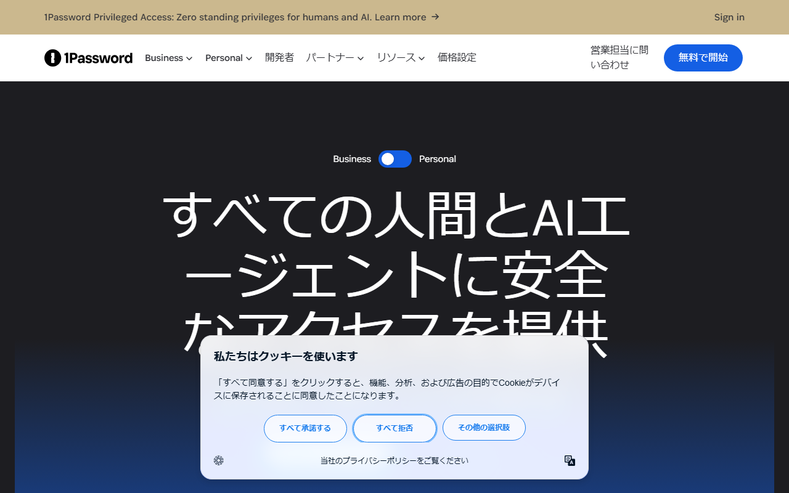
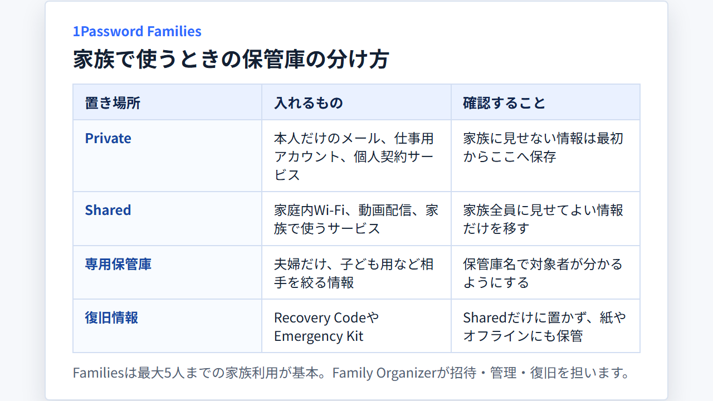

1Passwordファミリーの使い方｜家族の招待・共有・復旧まで解説
1Password Familiesは、家族それぞれが個別のアカウントを持ち、必要なパスワードだけを保管庫で共有するプランです。
誰を管理者にするか、何を共有するか、復旧にどう備えるかを迷わないよう、契約前の準備から招待、移行、離脱まで順に解説します。
1Password Familiesでできること（家族・保管庫・復旧）
Familiesでは家族ごとに別のアカウントを持ち、個人用と家族用の保管庫を分けられます。Family Organizerはメンバー管理とアカウント復旧を担います。
- 対象：家族で使う1Passwordプラン
- 人数：家族5人込み（追加は有料）
- 個人用：各自のPrivate保管庫
- 共有用：家族のShared保管庫
- 管理：Family Organizerが招待・復旧
- お試し：14日間の無料トライアル
家族と別々のアカウントを持ち、共有保管庫や家族による復旧を使うならFamiliesが向きます。利用者が1人で、どちらも不要ならIndividualで足ります。
基本料金に含まれる人数と無料トライアルの案内を日本語で確認できます。

契約前に決めることは管理者・人数・支払い方法
申込みの前に、支払う人とFamily Organizerを決めます。招待する家族とゲストを分け、年払いと月払いの違いも押さえておきましょう。
支払う人とFamily Organizerを決める
まず、契約者と支払いに使うカードを決めます。Familiesの請求を家族の誰が管理するのか、先に共有しておけば役割の混同を防げます。
Family Organizerは、家族の招待やメンバー管理を行う役割です。家族がアカウントへサインインできなくなったときは、復旧も手伝います。
復旧を一人に任せきりにしないため、信頼できる家族もFamily Organizerにする形を検討してください。支払う人と復旧を担当する人は、別でも構いません。
招待する家族とゲストを分ける
Familiesへ参加する家族は、それぞれ自分のアカウントを作ります。全員で一つのアカウントパスワードを回覧する仕組みではありません。
家族ではない相手に一部の情報だけを見せたい場合は、ゲストとして指定した保管庫を共有します。家事代行や親族など、共有範囲を限定したい相手まで家族メンバーに加える必要はありません。
契約前に、次の2種類に分けておくと、招待後の設定で迷いません。
- Familiesへ招待する家族
- 特定の保管庫だけを共有するゲスト
Familiesの料金と無料トライアルを確認する
Familiesには常設の無料プランがありません。14日間の無料トライアルが付く有料プランです。無料版を探している場合は、試用期間後に料金が発生する点を押さえてください。
基本料金には家族メンバー5人とゲスト5人が含まれます。6人目以降の家族メンバーには、招待承認時から日割りの追加料金が発生します。
料金は支払い周期で変わります。以下の円表記は、1ドル=157円換算（執筆時点の目安。為替で変動）です。
- 年払い・新規初年度：月額換算$4.49（約705円）
- 年払い・通常：月額換算$5.99（約940円）
- 月払い：月額$7.99（約1,254円）
日本から公式サイトで申し込めます。対応カードにはJCBも含まれ、請求書はPDFでメール送付されるほか、Billing設定からも取得できます。
年払いと月払いの表示を切り替え、申込み時に適用される条件を見比べられます。
家族を招待し、参加してもらう手順
管理者が招待を送り、家族は招待リンクから自分専用のアカウントを作ります。アカウントパスワードやSecret Keyを家族全員で共用しないことが大切です。
Family Organizerが招待を送る
招待する側は、次の順で進めます。
- Family Organizerのアカウントで1Password.comへサインインする
- 家族のメールアドレスを指定して招待を送る
- 招待した相手が参加を終えたか確かめる
招待メールは、参加する本人が開けるアドレスへ送ります。家族のアカウントを管理者がまとめて作る形ではありません。参加する本人が各自で設定します。
招待された家族が自分のアカウントを作る
招待された側はメール内のリンクを開き、自分用のアカウントを設定します。ここで作るアカウントパスワードは、ほかの家族へ渡しません。
設定が終わったら、Private保管庫とShared保管庫が分かれていることを確認します。Privateは本人専用、Sharedは参加する家族の共用です。
アプリとブラウザ拡張へサインインする
アカウントを作った後は、普段使う端末のアプリとブラウザ拡張へサインインします。アプリの表示言語はOSの設定に合わせられます。設定画面から日本語を選ぶこともできます。
初回は、次の3点を家族ごとに確かめます。
- 自分のPrivate保管庫を開ける
- 家族のShared保管庫を開ける
- ブラウザ拡張から保存と自動入力を使える
日本語の公式サイトから、対応アプリやブラウザ拡張の案内へ進めます。
個人保管庫と共有保管庫は「誰に見せるか」で分ける
自分だけで使う情報はPrivateへ置き、家族で使う情報だけをSharedへ移します。夫婦だけ、親子だけなど、相手を絞るなら別の共有保管庫を作ります。

Private保管庫には自分だけの情報を入れる
Private保管庫は、家族にも見せない情報の置き場所です。たとえば、次のようなログイン情報が該当します。
- 個人のメール
- 本人名義の金融サービス
- 仕事で使うアカウント
- 個人だけが契約するサービス
家族で使う予定がない情報は、最初からPrivateへ保存します。「いったん全部を共有して後で戻す」と、見せる必要のない情報まで公開してしまいます。
Shared保管庫には家族で使う情報だけを入れる
Shared保管庫には、家族全員が使うものだけを入れます。家庭内Wi-Fi、動画配信、家族用サービスなどが候補です。
共有するアイテムを移す前に、保管庫へアクセスできる人を確かめます。共有をやめるときは、対象アイテムをSharedから外し、必要ならパスワードも変更します。
夫婦・親子・ゲストで共有範囲を分ける
家族全員に見せる必要がない情報は、相手ごとに保管庫を分けます。
- 夫婦だけ：公共料金、保険、家計に関わるサービス
- 親子だけ：学校や習い事で使うサービス
- 家族全員：Wi-Fiや共用の動画配信
- ゲスト：指定した保管庫だけ
保管庫名には「夫婦」「子ども用」のように、対象が分かる名前を付けます。新しいアイテムを保存するときも、誰に見せる情報なのか判断しやすくなります。
公式ページでは、Familiesに含まれる共有機能と保管庫の考え方を確認できます。
家族のアカウント復旧に備える
Family Organizerは、家族メンバーのアカウント復旧を助けられます。管理者側のトラブルにも備え、復旧手段を一人へ集中させない設計が必要です。
Family Organizerを一人に集中させない
Family Organizerが一人だけだと、その人が対応できない場面で家族の復旧が止まります。信頼できる家族にも役割を持たせ、誰が復旧を助けるのか共有しておきます。
追加で任せる相手は、普段使うメールを確認でき、家族から連絡を受けて復旧依頼に対応できる人に限ります。管理権限を必要以上に増やさないことも大切です。
Recovery CodeとEmergency Kitを保管する
個人・家族向けアカウントにはRecovery Codeが用意されています。Emergency Kitと同じものだと思わず、両方の役割を家族ごとに確認してください。
復旧用の情報をShared保管庫だけに置くと、サインインできないときに取り出せません。紙やオフラインの保管先も含め、1Passwordの外から参照できる方法を用意します。
家族が困ったときの連絡順を決める
端末の紛失やアカウントパスワード忘れが起きたとき、最初に誰へ連絡するのか決めます。次に、Family Organizerが復旧を始め、本人が新しい情報でサインインできるところまで確かめます。
連絡先と流れは、家族が読める場所にも残してください。1Passwordへ入れない本人に「1Passwordの中を見て」と伝える手順では役に立ちません。
IndividualからFamiliesへ移行する手順
先にFamiliesへ参加し、新しい家族アカウントを使える状態にしてからアイテムを移します。移行完了を確かめる前に、旧アカウントを削除してはいけません。
先にFamiliesへ参加する
既にIndividualを利用している家族も、まずFamily Organizerからの招待を受け取ります。Familiesへの参加が完了したら、アプリへ既存アカウントと家族アカウントの両方を追加します。
この時点では、旧アカウントの契約やデータを残します。移動元と移動先を同時に見られる状態にしてから、データを扱うためです。
既存アイテムを家族アカウントへ移す
既存アイテムは、家族アカウント側の保管庫へ移します。本人だけの情報は新しいPrivateへ、家族で使う情報は適切な共有保管庫へ分け、すべてをSharedへ入れないようにします。
移した後は、アイテムの件数と保存先を見直します。家族全員に見せる情報と、本人だけが使う情報が混ざっていないかも確かめます。
移行を確認してから旧アカウントを処理する
新しいアカウントで必要なアイテムを開けることを確かめます。アプリとブラウザ拡張でも保存先を見て、旧アカウントを参照しなくてよい状態にします。
1Passwordの返金は原則として行われず、未使用期間も対象です。旧契約の処理は、データ移行と請求状況を確かめた後に進めます。
家族が抜ける・削除されるときのデータと契約
家族メンバーが抜けることと、Families全体を解約することは別の操作です。共有アイテムへのアクセスと、本人の個人データも分けて扱います。
家族メンバーが自分で抜ける場合
Familiesを離れることが決まったら、本人のPrivate保管庫にある必要な情報を先に移します。離脱後も家族のShared保管庫を使える前提では進めません。
家族で使っていたサービスを本人が引き継ぐなら、共有アイテムの移動先も決めます。Shared内のアイテムは、Family Organizerと対象をすり合わせてから複製してください。
Family Organizerがメンバーを削除する場合
管理者がメンバーを削除するときも、先に本人のデータ移行を済ませます。別居や世帯分離など、共有を止める日が決まっているなら、その前に作業時間を設けます。
削除後は、元メンバーが知っている共用パスワードの変更も検討します。保管庫へのアクセスを止めることと、過去に見た認証情報を無効にすることは別だからです。
Families全体を解約する場合
Families全体の自動更新停止と、個別メンバーの削除は別の操作です。1Password.comで契約した場合は、Billingから解約します。
Apple App StoreやGoogle Playで契約した場合は、各ストアの定期購入画面から解約します。ソースネクストの3年版は自動更新されないため、同じ解約操作は不要です。
解約後も請求期間の終了までは利用でき、その後はアカウントが凍結されます。凍結後もサインインしてデータの閲覧やエクスポートは可能ですが、新しい項目の追加や編集、自動入力は使えません。
現行プランの案内から、契約管理やサポートへ進む入口を確認できます。
1Password Familiesのよくある質問
Business契約に付帯するFamiliesは、退職後の継続条件が通常契約と異なります。利用中の人は、勤務先を離れる前に対応を確認します。
1Password Business利用者はFamiliesを別途契約する？
1Password Businessの契約チームに所属するメンバーには、Familiesの会員資格が無料で付帯します。業務用アカウントとは分離して個人用に使え、いつでもリンクを解除できます。
退職前にリンクを外して支払い方法を追加すれば、その後は自己負担で継続できます。勤務先の契約に個人データを入れず、独立した家族アカウントとして扱います。
まとめ：招待前に管理者と共有範囲を決めておく
支払う人とFamily Organizerを決めてから家族を招待し、PrivateとSharedを分けます。最後に復旧計画まで作ると、共有しすぎと復旧不能を防げます。
始める順番は次のとおりです。
- 契約者とFamily Organizerを決める
- 招待する家族とゲストを分ける
- 家族ごとにアカウントを作る
- PrivateとSharedへアイテムを分ける
- 複数のFamily Organizerと復旧手段を用意する
- 移行・離脱時のデータ処理を確認する
無料トライアル中も、実際に使う家族を招待し、保管庫と復旧の流れまで確かめることが大切です。料金だけでなく、家族が迷わず使える分け方まで決めてから継続を判断してください。
無料トライアルとFamiliesの現行条件を日本語の料金ページで確かめられます。